读paper4-多智能体强化学习入手与论文集
多智能体强化学习入手与论文集
TODO List
- [x] 先把RL复习一下：马尔可夫与蒙特卡洛部分
- [x] 2019.10的一篇nature：Grandmaster level in StarCraft II using multi-agent reinforcement learning。https://www.nature.com/articles/s41586-019-1724-z。https://mp.weixin.qq.com/s/R4RXxLan7H2sCbBrKqyH6w
- [x] 多智能体强化学习算法【一】【MAPPO、MADDPG、QMIX】
- [ ] 新型多智能体 Transformer(MAT，Multi-Agent Transformer)架构，该架构可以有效地将协作 MARL 问题转化为序列模型问题，其任务是将智能体的观测序列映射到智能体的最优动作序列。https://arxiv.org/pdf/2205.14953.pdf
- [x] 多智能体强化学习大模型初探https://mp.weixin.qq.com/s/C_bNa42FdR5xLRcbSLXSCg
- [x] 一个观点：cooperative multi-agent reinforcement learning在发现了基于策略梯度的sequential rollout机制以后就算是解决了，剩下就是对sequential rollout工程实现上的修补改进（比如引入order matters, transformer结构, distill方法等）。
- [x] Multiagent Reinforcement Learning: Rollout and Policy Iteration https://ieeexplore.ieee.org/document/9317713
- [ ] 为了在连续动作空间中验证多智能体的credit assignment问题，可以在连续动作空间中使用基于Q分解的多智能体方法，如Qmix。https://zhuanlan.zhihu.com/p/635389539 （感觉有点超纲，可以掠过
- [ ] 基于AFSIM的智能化思考
RL复习：马尔可夫与蒙特卡洛
马尔可夫决策过程（Markov Decision Processes,MDPs）
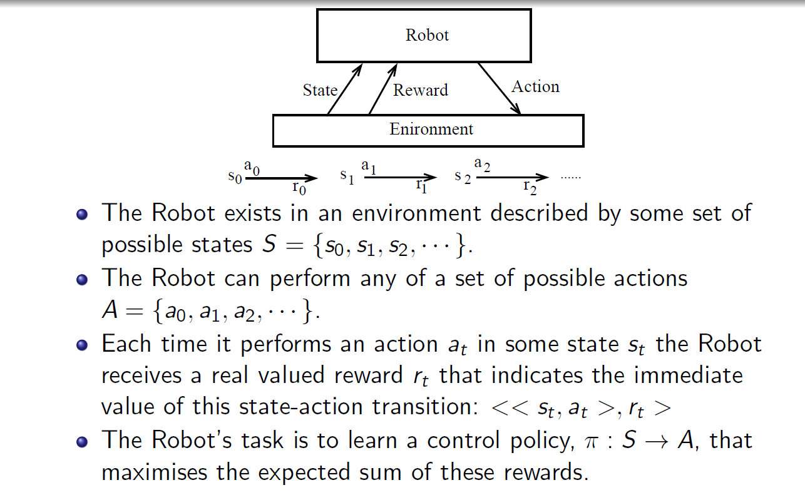MDPs 简单说就是一个智能体（Agent）采取行动（Action）从而改变自己的状态（State）获得奖励（Reward）与环境（Environment）发生交互的循环过程。
MDP 的策略完全取决于当前状态（Only present matters），这也是它马尔可夫性质的体现。
其可以简单表示为：

基本概念
- ：有限状态 state 集合，s 表示某个特定状态
- ：有限动作 action 集合，a 表示某个特定动作
- Reward ：表示 agent 采取某个动作后的即时奖励，它还有 , $R(s) $等表现形式，采用不同的形式，其意义略有不同
- 状态转移函数 ：表示在状态执行动作之后到达状态的概率
- 智能体的策略（Policy）通常用字母表示。策略 是一个函数，表示在输入状态情况下采取动作的概率。
- Transition Model ： Transition Model, 根据当前状态 和动作 预测下一个状态 ，这里的 表示从 采取行动 转移到 的概率
强化学习的本质是学习从环境状态到动作的映射（即行为策略）。而仅仅使用立即回报r(s,a)肯定是不够的(一个策略π的长期影响才是至关重要的).
回报（Return）：
与 折扣率（discount）： U 代表执行一组 action 后所有状态累计的 reward 之和，即我们所要求的回报，但由于直接的 reward 相加在无限时间序列中会导致无偏向，而且会产生状态的无限循环。因此在这个 Utility（效用） 函数里引入 折扣率这一概念，令往后的状态所反馈回来的 reward 乘上这个 discount 系数，这样意味着当下的 reward 比未来反馈的 reward 更重要，这也比较符合直觉。定义
所以从第时刻状态开始，直到终止状态时，所有奖励的衰减之和称为回报 （Return），公式如下
由于我们引入了 discount，可以看到我们把一个无限长度的问题转换成了一个拥有最大值上限的问题。
强化学习的目的是最大化长期未来奖励，即寻找最大的 U。（注：回报也作 G 表示，这里我们用 ）
基于回报（return），我们再引入两个函数
- 状态价值函数：，意义为基于 t 时刻的状态 s 能获得的未来回报（reward ）的期望
- 动作价值函数：，意义为基于 t 时刻的状态 s，选择一个 action 后能获得的未来回报（return）的期望
状态价值函数和动作价值函数之间的关系：在使用策略中，状态的价值等于在该状态下基于策略采取所有动作的概率与相应的价值相乘再求和的结果：
使用策略时，状态下采取动作的价值等于即时奖励加上经过衰减后的所有可能的下一个状态的状态转移概率与相应的价值的乘积：
价值函数用来衡量某一状态或动作 - 状态的优劣，即对智能体来说是否值得选择某一状态或在某一状态下执行某一动作。
引出价值函数，对于获取最优的策略 Policy 这个目标，我们就会有两种方法：
- 直接优化策略 或者 使得回报更高；
- 通过估计 value function 来间接获得优化的策略。道理很简单，既然我知道每一种状态的优劣，那么我就知道我应该怎么选择了，而这种选择就是我们想要的策略。
当然了，还有第三种做法就是融合上面的两种做法，这也就是以后会讲到的 actor-critic 算法。
所以最开始的PPT的图也可以这样表示：
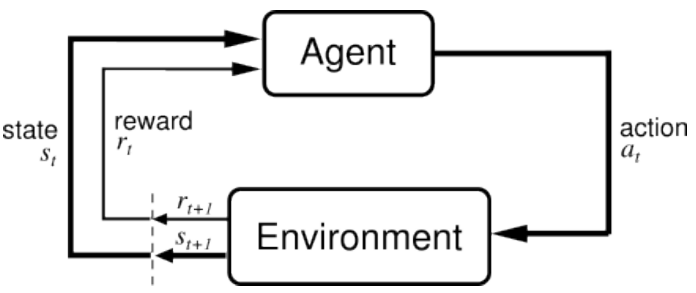
Value Function 价值函数
从数学的角度，我们常常会用一个函数 来表示一个状态的价值，也可以用 来表示状态及某一个动作的价值。我们上面的例子就是来评估某一个状态下动作的价值，然后根据价值做出判断。实际上我们这里也是有策略的，我们的策略更简单：
1 | if 某一个决策的价值最大： |
这就是价值函数的意义。在后面的文章当中，我们还会发现，其实我们还可以同时使用策略加价值评估的方法来联合给出决策，这种算法就是所谓的 「Actor-Critic」 算法
为什么引出Value Function？
我们是为了得到最优策略，所以想通过评估状态的价值来引导决策。在MDP的世界，每个状态下的价值是确定的，即存在一个唯一的值来表示某一个状态。也就是说存在一个和策略无关的值来表示某一个状态。然后我们就可以利用这个状态的价值来进行决策。也就是说这里有一个先有鸡还是先有蛋的问题。我们是先有价值，还是先有策略。这里当然是先有价值，然后再进行决策。
但是，很显然，我们很难得到这个Value Function。要么是因为我们不是完全可观察的环境，要么就是我们根本无法计算这个Value Function。我们唯一能做的就是去估计这个Value Function。
怎么估计？
唯一的方法就是反复试验。
但是试验的过程中我们肯定得采取某一个策略，否则试验进行不下去。因此我们得到的reward都是在这个策略之下得到的，所以我们得到的value function显然也就是在这个策略下得到的value function。这只是实际得到的value function。
因此，我们就想，如果使用不同的策略进行无数次的实验，然后把最大的value function作为真正的value function。这样可以吗？这样当然可以啊。因为最大的value function肯定是唯一的。我们保证了唯一性，也就是可以基于这个来做判断。而使用最大值其实也是显而易见的，代表这这个状态的最大可能。既然每个状态的最大可能价值知道了，我们也就可以根据这个最大可能价值来做判断，得到的策略也就是最优策略Optimal Policy。这就实现了我们的初衷：得到状态的价值Value Function。
Bellman方程
没错，就是算法课讲的那种Bellman方程
在上文我们介绍了Value Function价值函数，所以为了解决增强学习的问题，一个显而易见的做法就是----
我们需要估算Value Function
Value Function从分析上是可以评估出来的，那具体该怎么评估呢？
我们下面将不得不引入点数学公式，虽然也会非常好理解。
还记得回报Result的基本定义吗？就是所有Reward的累加（带衰减系数discount factor）
那么Value Function该如何定义？也很简单，就是期望的回报啊！期望的回报越高，价值显然也就越大，也就越值得去选择。用数学来定义就是如下：
接下来，我们把上式展开如下：
因此，
在上式的最后一个等号中，一方面，即时奖励的期望正是奖励函数的输出，即 。另一方面，等式中剩余部分 可以根据从状态出发的转移概率得到，即可以得到
上面这个公式就是Bellman方程的基本形态。从公式上看，当前状态的价值和下一步的价值以及当前的反馈Reward有关。
我们可以写成矩阵的形式并求解析解
以上解析解的计算复杂度是，其中是状态个数，因此这种方法只适用很小的马尔可夫奖励过程。求解较大规模的马尔可夫奖励过程中的价值函数时，可以使用动态规划（dynamic programming）算法、蒙特卡洛方法（Monte-Carlo method）和时序差分（temporal difference）
它表明Value Function是可以通过迭代来进行计算的
Bellman期望方程
略
蒙特卡洛方法
蒙特卡洛方法（Monte-Carlo methods）也被称为统计模拟方法，是一种基于概率统计的数值计算方法。运用蒙特卡洛方法时，我们通常使用重复随机抽样，然后运用概率统计方法来从抽样结果中归纳出我们想求的目标的数值估计。一个简单的例子是用蒙特卡洛方法来计算圆的面积。例如，在图 3-5 所示的正方形内部随机产生若干个点，细数落在圆中点的个数，圆的面积与正方形面积之比就等于圆中点的个数与正方形中点的个数之比。如果我们随机产生的点的个数越多，计算得到圆的面积就越接近于真实的圆的面积。
我们现在介绍如何用蒙特卡洛方法来估计一个策略在一个马尔可夫决策过程中的状态价值函数。回忆一下，一个状态的价值是它的期望回报，那么一个很直观的想法就是用策略在 MDP 上采样很多条序列，计算从这个状态出发的回报再求其期望就可以了，公式如下：
在一条序列中，可能没有出现过这个状态，可能只出现过一次这个状态，也可能出现过很多次这个状态。我们介绍的蒙特卡洛价值估计方法会在该状态每一次出现时计算它的回报。还有一种选择是一条序列只计算一次回报，也就是这条序列第一次出现该状态时计算后面的累积奖励，而后面再次出现该状态时，该状态就被忽略了。假设我们现在用策略从状态开始采样序列，据此来计算状态价值。我们为每一个状态维护一个计数器和总回报，计算状态价值的具体过程如下所示。
使用策略采样若干条序列：
对每一条序列中的每一时间步t的状态s进行以下操作：
- 更新状态的计数器 ；
- 更新状态的总回报 ；
- 每一个状态的价值被估计为回报的平均值
根据大数定律，当 $N(s)\to\infty $，有 。计算回报的期望时，除了可以把所有的回报加起来除以次数，还有一种增量更新的方法。对于每个状态s和对应回报，进行如下计算：
MARL基本问题
问题定义与研究动机
将一个多智能体环境用一个元组表示，其中是智能体的数目，是所有智能体的状态集合，是所有智能体的动作集合，是所有智能体奖励函数的集合，是环境的状态转移概率。一般多智能体强化学习的目标是为每个智能体学习一个策略来最大化其自身的累积奖励。
在 MARL 中，策略控制多个智能体同时与环境交互，其目标仍然是最大化能够获得的累积回报。此时，环境全局状态（global state）的转移以及奖励值（reward）是和所有智能体的联合动作（joint action）而非单个智能体的动作相关的。因此在策略的学习过程中，每个智能体的策略的更新需要考虑其他智能体的当前策略。
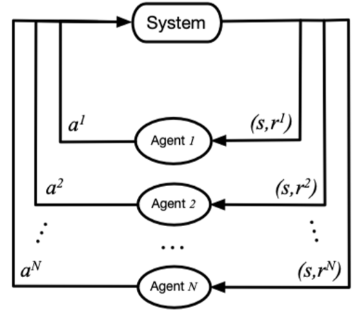
在该图中，system 表示多智能体环境， 表示第 i 个智能体， 表示第 i 个智能体采取的动作， 表示第 i 个智能体获取的局部奖励。 在训练过程中，各个智能体分别与环境进行交互，系统会反馈回联合奖励。
总的来说，多智能体强化学习与单智能体强化学习的主要区别在于以下四点：
环境的非稳定性：智能体在做决策的同时，其他智能体也在采取动作，而环境状态的变化与所有智能体的联合动作相关。因此对于单个智能体的动作的价值评估会随着其他智能体的动作变化而变化，这会导致在 MARL 训练中的非平稳性 (non-stationary)。
智能体获取信息的局限性：在一些环境中（例如 SMAC），每个智能体不一定能够获得全局的状态信息，而是仅能获取局部的观测信息，但无法得知其他智能体的观测信息、动作等信息。
个体的目标一致性：各智能体的目标可能是最优的全局回报，也可能是各自局部回报的最优。
可拓展性：大规模的多智能体系统可能涉及到高维度的状态空间和动作空间，这对于模型表达能力，算法的学习能力和真实场景中的硬件算力有一定的挑战。
研究方向
一个专门收集并分类多智能体强化学习论文与代码的开源项目——MARL Papers with Code。
项目中所涵盖的经典和新进论文反映了MARL领域的演进，包括但不限于：
- 独立学习：如IQL，它探讨了如何在独立和合作智能体之间进行选择。
- 价值分解网络：例如VDN, QMIX 和 QTRAN，这些方法提出了有效的协同策略，通过分解价值函数来优化团队性能。
- 策略梯度：如COMA 和MADDPG，它们为混合合作-竞争环境中的多智能体决策提供了强大的工具。
- 通信机制：包括BiCNet, CommNet 和 IC3Net，它们探索了智能体间如何通过学习和沟通来增强协作。
此外，项目还包含了一系列用于测试和评估多智能体系统的环境，如StarCraft Multi-Agent Challenge (SMAC) 和PettingZoo，这些都是实际应用中的重要实验平台。
实现思路上，对于 MARL cooperation 任务来说，最简单的思路就是将单智能体强化学习方法直接套用在多智能体系统中，即每个智能体把其他智能体都当做环境中的因素，仍然按照单智能体学习的方式、通过与环境的交互来更新策略；这是 independent Q-learning， independent PPO 方法的思想，但是由于环境的非平稳性和智能体观测的局部性，这些方法很难取得不错的效果。
MARL有一种比较经典且效果不错的进阶范式：中心化训练去中心化执行（centralized training with decentralized execution，CTDE）。所谓中心化训练去中心化执行是指在训练的时候使用一些单个智能体看不到的全局信息而以达到更好的训练效果，而在执行时不使用这些信息，每个智能体完全根据自己的策略直接动作以达到去中心化执行的效果。中心化训练去中心化执行的算法能够在训练时有效地利用全局信息以达到更好且更稳定的训练效果，同时在进行策略模型推断时可以仅利用局部信息，使得算法具有一定的扩展性。
CTDE 算法主要分为两种：一种是基于值函数的方法，例如 VDN，QMIX 算法等；另一种是基于 Actor-Critic 的方法，例如 MADDPG 和 COMA 等。
Valued-based MARL
对于 Valued-based MARL， 主要的思路是将全局的 reward 值分解为可以供各个 agent 学习的局部 reward 值，从而便于智能体的训练。主要有 QMIX， WQMIX， QTRAN 等方法。
- QMIX: QMIX 是一种基于 Value-Based 的多智能体强化学习算法（MARL），其基本思想来源于 Actor-Critic 与 DQN 的结合。使用中心式学习（Centralized Learning）分布式执行（Distributed Execution）的方法，利用中心式 Critic 网络接受全局状态用于指导 Actor 进行更新。QMIX 中 Critic 网络的更新方式和 DQN 相似，使用 TD-Error 进行网络自更新。除此之外，QMIX 中为 Critic 网络设立了 evaluate net 和 target net， 这和 DQN 中的设计思想完全相符。
- WQMIX: WQMIX 的核心与 QMIX 相同，也是学习一个 Q 值混合网络，但其通过加权投影的方法学到可以突破单调性限制的 Q 值混合网络。
- QTRAN: QTRAN 通过学习独立 action-value 网络, 混合 action-value 网络，全局 state-value 网络来突破单调性限制。
- QPLEX: 该方法采用 duplex dueling network 结构将联合动作值函数分解为个体的动作值函数。QPLEX引入了dueling structure：Q=V+A，用于表示联合和个体动作值函数，然后将IGM原则重新形式化为基于优势的IGM。这种重新表述将IGM的一致性转换为对优势函数值范围的约束，从而促进了具有线性分解结构的动作-值函数的学习。QPLEX利用 advantage of a duplex dueling 架构将IGM约束条件编码到神经网络结构中，保证IGM的一致性。
Actor-critic MARL
对于 Actor-critic MARL， 主要的思路是学习一个适用于多智能体的策略网络。主要有 COMA, MAPPO 等方法。
- COMA: COMA 使用反事实基线来解决多个 agent 信用分配的挑战，并使用 critic 网络来有效地计算反事实基线。
- MAPPO: MAPPO 的基本思路与 PPO 相同， 但它输入 Actor 网络的为各个 agent 的 Local observation， 输入 Critic 网络的为各个 agent 的 Agent specific global state。
- MADDPG
问题
对于一些 Agent 数量更多，更加复杂的环境如 Multi-Agent Petting Zoo 的一些子环境中，存在近百个 agent , 单纯的 MARL cooperation 可能无法起到很好的效果，需要各个 agent 之间实时通信以共享信息
对于一些实际情况，比如自动驾驶中，获得实时的全局状态所需的带宽压力过大，尤其是当车辆数量较多时，获取实时的全局状态几乎不可能，也就无法采用 CTDE 的方法进行训练
在以上 1, 2 情况下，可以采用多个智能体之间进行通信 （MARL Communication） 的办法来进一步提高学习效率。
比较新的研究成果：
一个观点
cooperative multi-agent reinforcement learning在发现了基于策略梯度的sequential rollout机制以后就算是解决了，剩下就是对sequential rollout工程实现上的修补改进（比如引入order matters, transformer结构, distill方法等）。
这个问题可以在Multiagent Reinforcement Learning: Rollout and Policy Iteration中或许有一些启发
Q-learning、DQN 及 DQN 改进算法都是基于价值（value-based）的方法，其中 Q-learning 是处理有限状态的算法，而 DQN 可以用来解决连续状态的问题。在强化学习中，除了基于值函数的方法，还有一支非常经典的方法，那就是基于策略（policy-based）的方法。对比两者，基于值函数的方法主要是学习值函数，然后根据值函数导出一个策略，学习过程中并不存在一个显式的策略；而基于策略的方法则是直接显式地学习一个目标策略。
多智能体策略梯度
https://zhuanlan.zhihu.com/p/689301186
策略梯度定理是所有单智能体策略梯度强化学习算法的基础，这些算法定义了各种各样的更新规则，用于参数化策略的参数。策略梯度定理指出，参数化策略的质量的梯度，通过其期望回报给出，关于策略参数可以如下写成：
为了将策略梯度定理扩展到 MARL 的设置，我们可以定义多智能体策略梯度定理（Foerster, Farquhar, et al. 2018; Kuba et al. 2021; Lowe et al. 2017; Lyu et al. 2023），通过考虑到智能体的期望回报依赖于所有智能体的策略。利用这个洞察，我们可以为智能体 i 的策略写出所有智能体策略的期望值下的多智能体策略梯度定理。依照本文的符号规范，我们使用信息历史的更一般的部分可观察情况来写出多智能体策略梯度定理：
类似于单智能体策略梯度定理，多智能体策略梯度定理可以通过以不同方式估算预期回报来推导出各种策略梯度更新规则。我们已经看到了两种多智能体策略梯度算法的实例，即第 3.2 节中的独立学习的策略梯度算法。对于独立的 REINFORCE 和 A2C，智能体 i 的预期回报分别通过蒙特卡洛估计和仅依赖于智能体 i 的个体观测历史和动作的优势估计来估算，即
接下来，我们将专注于 CTDE（集中训练分散执行）范式，并推导出基于额外集中信息条件的预期回报估计。特别是，我们将看到，当使用集中信息和所有智能体的动作时，我们可以获得更精确的预期回报估计。然后，我们将使用这些价值函数来推导出基于 CTDE 范式的多智能体策略梯度算法。
rollout 算法
rollout 在字典中的意思是：首次展示，滑跑。不得不说，这两个解释和我们今天介绍的含义还是有些差别。在 CS 相关论文中，一般 rollout 表示一次试验，一条轨迹。就比如我们我们用 MC 仿真出了一个 episode，这个 episode 就是一个 rollout。它和我们前面讲的轨迹采样（trajectory sampling）也很像。
什么是 rollout 算法？
知道了 rollout 的含义，我们应该大概猜到 rollout 算法是一类在仿真轨迹层面上进行更新学习的方法。具体的定义如下：rollout 算法是一种基于 MC 控制的决策时规划算法。看到决策时规划，我们知道规划是针对于当前的状态的，基于 MC 说明了我们是利用 MC 来估计当前状态或者行为的值，从而进行规划的。具体是怎么做的呢？为了估计一个给定策略的动作值函数，rollout 算法利用 MC 采样得到很多从当前状态开始的仿真轨迹（当前状态下有多个动作，因此对于每个动作都会得到一些仿真的轨迹）。然后分别用这些轨迹回报的均值来估计每个动作的值。当这个估计值足够准确了，规划算法会执行具有最高估计值的动作。这个动作和环境交互，转移到下一个状态，再利用同样的方法规划出下一个状态的动作。重复下去，就得到了一个完整的 plan。
Rollout 和 MC 算法的区别？
我们在第 5 章讲了 MC 方法，这里 rollout 算法似乎也是用 MC 估计值函数，他们有什么区别呢？rollout 算法的目标不是估计完整的最优动作值函数 ，或者是对于特定策略 的动作值函数 。相反，**rollout 算法只估计每一个当前状态的值。**和决策时规划算法一样，rollout 算法只在当前时刻会利用到这些估计值，然后就丢弃了。我的理解是他们的应用场景不同，导致其侧重不同。MC 是用于学习，所以我们要估计出所有状态的值函数，然后才能找到一个最优策略。而 rollout 算法是用于规划的，而且是决策时规划。对于这种规划，我们只在当前状态下搜索所有可能的 plan，然后选择最有利的。因此就只侧重于当前状态周围值函数的值。这个区别，使得 rollout 算法实现起来很简单。因为我们不需要对所有状态 - 动作对采样。
Rollout 算法的本质
rollout 算法对于每个当前状态，通过采样不同动作的仿真轨迹，估计不同动作的值函数，然后选择最大估计值的动作。这个过程到底在干啥？回想我们讲的策略提升理论。对于新策略 和当前策略 ，如果说对于任何状态都满足 ，那么我们就说策略 至少和 一样好。如果不等式严格成立，那就说明 比 好。我们的 rollout 算法不刚好满足这个条件吗。对于当前状态之外的状态，rollout 算法的策略和原来一样。对于当前的状态，因为 rollout 算法总是选择最大估计值对应的动作（这个选择过程隐含的定义了一个新的策略 ），显然满足 。所以说 rollout 算法本质上的目的是提升当前的策略（一般利用 MC 估计值函数的策略叫做 rollout policy，因为这个策略就是用来 roll out 出一个轨迹的），而不是找到一个最优策略。经验表明，rollout 算法虽然简单，但是在实际中十分有效。
Rollout 算法的效率
由于 rollout 算法也是一个决策时规划算法，他就必然受到单步决策时间的约束。一般来说，一个 rollout 算法计算时间受到下面几个因素的影响：
- 当前状态下可能出现的动作数 ，其实就是分支数
- 仿真轨迹的长度。显然轨迹越长，需要的计算越多
- 策略的执行时间
- 为了获得好的 MC 值估计所需要的仿真轨迹的数量
为了解决上面的问题，通常有下面的一些策略，比如：
- 因为 MC 采样的轨迹是相互独立的，因此我们可以并行的在多个进程中仿真轨迹，然后利用所有的仿真数据来估计值函数。这样就能提高效率
- 针对仿真轨迹太长的问题，我们可以使用截断的轨迹。然后在截断的位置用一个估计值替代。这有点像多步的 TD 方法
Grandmaster level in StarCraft II using multi-agent reinforcement learning
过程还是与马尔可夫过程非常相似的，AlphaStar通过一个概览图和单位列表来查询和记录游戏，要执行操作时，智能体输出要发出操作类型（例如build）、应用于谁、目标位置以及下一个操作何时发出动作，并通过一个限制动作率的监控层发送到游戏中，一定的操作延迟时间后，收集我方与敌方信息以及小地图信息，通过算法选择下一步Action
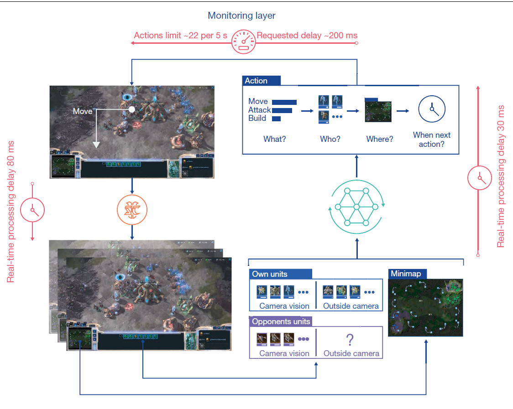AlphaStar的控制核心为策略 ，其中参数 表示神经网络，输入为从游戏开始时接收的所有观察值，并选择动作作为输出。控制约束条件为 ， 为人类玩家的数据（例如构建顺序）中采样所得策略的总结。
综合实现思路
AlphaStar的体系结构由处理《星际争霸》原始复杂性的通用神经网络组成，利用自注意力机制处理智能体自身和对手单位的观察结果。其次引入分散链接整合空间和非空间信息。然后用深度长短期记忆系统处理观测数据的时间序列，以解决部分可观测性问题。最后还使用自动回归策略和循环指针网络管理结构化的组合动作空间。
AlphaStar的参数最初是通过监督学习进行训练的，首先从可公开获取的匿名人类玩家回放赛数据集中抽取游戏，然后对该策略进行训练，最后仅以或为条件预测每一个动作，这就产生了一组反映人类游戏模式的不同策略。
AlphaStar随后通过强化学习算法训练参数，旨在对抗混合组合的对手时，最大化获胜概率（即计算出最佳响应）。算法通过多智能体程序确定了对手的选择，具体情况如下所述。AlphaStar的强化学习算法基于类似于优势AC(actor-critic)算法的策略梯度算法，在游戏重播中以异步的方式进行更新。根据之前的观察结果发现，在巨大的行动空间中，当前策略和以前的策略在许多步骤中都无法匹配，由此引入一种离轨策略学习方法，即根据先前策略生成的经验中更新当前策略。因此，我们使用了一种能够在不匹配的情况下仍然有效学习的算法组合：时序差分算法、削波重要性采样(V-trace)和一种新的自模拟算法(UPGO)，该算法将策略移向奖励优于平均水平的轨迹。
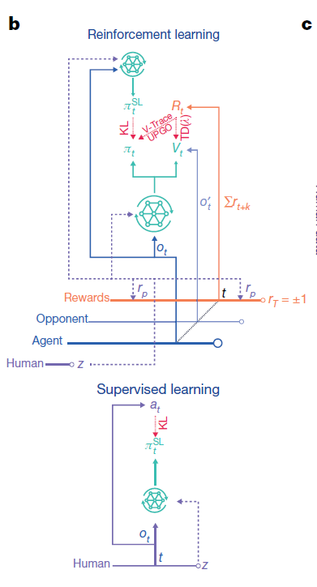AlphaStar使用监督学习和强化学习进行训练，在监督学习（图中下图）中，更新参数以优化输出值与从重播集合中采样的人类动作之间的Kullback-Leibler（KL）散度；在强化学习（图中上图）中，使用人类玩家的数据对统计z进行抽样，通过强化学习（TD（λ）、V-trace、UPGO）和对监督智能体的KL损失函数来收集智能体得到的经验以更新策略和价值输出。
训练方式
在训练上，使用了三组智能体，以监督学习进行初始化，随后开展强化学习训练。训练时，这些智能体会间歇性地将自己的副本（在某个特定点被冻结的“玩家”数据）添加到联盟中，主要智能体针对过去所有人类玩家以及他们自己进行训练；联盟开发型智能体与所有过去的人类玩家进行训练；主要开发型智能体则针对主要智能体进行训练，当主要开发型智能体和联盟智能体向联盟中添加一名玩家时，可以将他们重置为受监督的智能体。
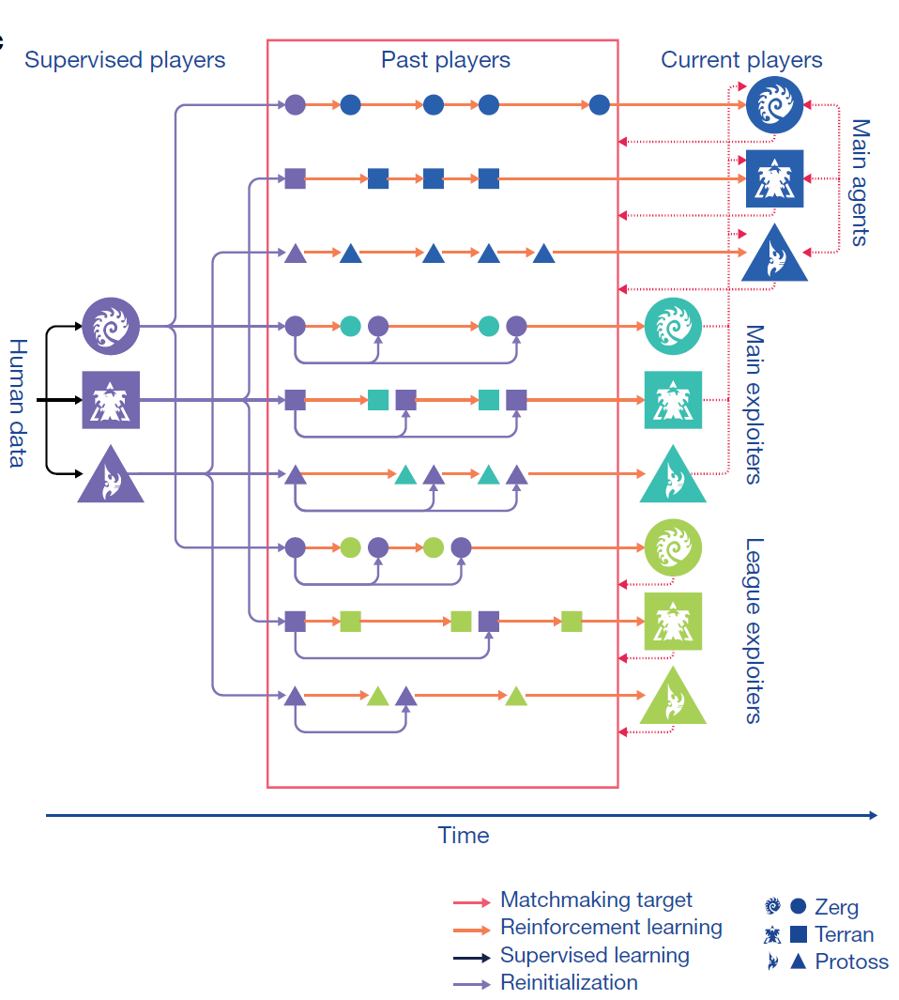主要开发型智能体针对主要智能体进行训练，也就是说主要开发型智能体的作用就是增强主要智能体咯？从图上看，主要智能体从人类数据中学习策略，然后通过主要开发智能体进行与人类数据的对抗训练，进行进一步学习？
不过文中也提到，自我对弈算法学习迅速，但可能会无限期地进行循环（例如，A打败B，B打败c，但A输给C），而没有取得进步
文中解答了这一疑惑：联盟由三种不同类型的智能体组成，主要区别在于他们选择对手组合的机制。
首先，主要智能体运用优化虚拟自我对弈（PFSP）机制，根据每个对手对战智能体时的获胜概率，适当地调整三种智能体的混合概率，以此智能体可以有更多机会去战胜最棘手的对手。在固定概率下选择一个主要智能体作为对手，这可以快速提高自我对弈机制的学习能力。
第二，主要开发型智能体只需要与当前主要智能体的迭代相反，它们的目标是识别主要智能体中的潜在漏洞，因此需要削弱主要智能体的这些弱点。
第三，联盟开发型智能体使用与主要智能体相似的PFSP机制，但不是主要开发型智能体的优化目标，主要目的是找到整个联盟的系统漏洞。主要开发型智能体和联盟的开发型智能体都会定期初始化，激励多元化，也能迅速发现一些针对开发鲁棒性差的专业策略。
强化学习部分
AlphaStar受制于离线策略的数据，这可能需要对离轨策略进行修正。由于现有的离线策略修正方法在大型结构化的动作空间中效率低下，不同的动作可能导致相似(甚至相同)的行为结果。使用了混合方法来解决这个问题，将修正的离线策略（避免不稳定）和未修正的已更新价值函数（引入偏差但减少方差）有机结合。
使用V-trace更新策略，使用TD(λ)更新预估价值，引入了正向策略更新法(UPGO)更新策略参数。最终总体损失是策略和价值损失函数的加权和
MARL策略
在三个种族最新训练的智能体中使用自我对弈（SP）算法展开游戏。这种方法在策略空间会陷入循环，并且单独使用效果不佳。FSP通过与联盟中所有玩家间的对抗来避免循环。然而，许多游戏都是浪费在那些几乎在100%的游戏中都被击败的玩家身上。因此，引入了PFSP，使用一种匹配机制来提供良好的学习信号，而不是对联盟中的对手进行统一采样。首先给定一个学习智能体A，然后从一个候选集合C中对被冻结的对手B进行概率抽样。公式如下:
其中 是一些加权函数。当时，PFSP会选择最强大的玩家，其中 ，为控制所得分布的熵。 ，意味着智能体会不与已经击败的对手进行游戏。
从理论上讲，我们可以把看作是max-min优化的平滑近似形式，而不是FSP施加的max-avg形式
智能体只有与最强硬的对手对抗，才有可能对付更强大的对手，因此PFSP也使用了另一种策略：。在这种策略中，智能体优先在自己的级别上与对手进行游戏。我们将此策略主要用于开发型智能体和竞争型智能体上。
在训练中，我们使用了三种智能体，它们的不同之处仅在于当它们快速创建玩家以及被重新设置监督参数概率时，训练对手的分布。主智能体以35%的SP和50%的PFSP比重被训练，对抗联盟中所有已经通过训练的玩家，而另外15%的PFSP比重则被用于匹配对抗联盟中那些被遗忘的无法战胜的玩家以及曾经的开发者，如果没有那些玩家和开发者，那么这剩下的15%的PFSP将被用于玩家的自我博弈。每步，便将智能体的副本作为新球员添加到联赛中。且永远不会重置主要智能体。
联盟的开发型智能体通过PFSP进行训练，当他们在超过70%的比赛中击败了联赛中所有玩家，或者在暂停时间达到 步后，他们冻结的副本将被添加到联赛中。此时，智能体有25%的概率被重置为监督参数。根据以往经验，联盟的开发型智能体能够发现联盟中的所有盲点（联盟中没有任何玩家可以击败的策略未必最优)。
Multiagent Reinforcement Learning: Rollout and Policy Iteration
一种结合了深度强化学习和博弈论的新算法，用于解决多智能体系统中的合作和竞争问题。
理解rollout机制
基于策略梯度的sequential rollout机制在MARL表现如何
在本文中，我们关注于Rollout和类似PI（策略迭代）的方法，应用于控制由多个组件组成的问题，每个组件由一个分开的angent选择。这是一类多智能体问题，其中angent之间具有共享的目标函数和共享的状态信息。
基于将控制空间复杂性与状态空间复杂性进行权衡的问题重新表述，我们开发了一种方法：在每个阶段，angent顺序执行一个局部Rollout算法，该算法使用基本策略和其他angent的一些协调信息。每个阶段所需的总计算量与angent数量线性增长。相比之下，标准Rollout算法的总计算量随着angent数量呈指数增长。尽管所需计算量大大减少，我们证明了我们的多智能体Rollout算法具有与标准Rollout相同的基本损失改进性质：相对于基本策略，它保证了性能的提高。我们还讨论了自主式多智能体Rollout方案，该方案允许angent通过预先计算的信号信息自主做出决策，而无需进行angent之间的在线协调选择。
研究表明，在多智能体问题的背景下，逐个智能体版本的rollout算法大大减少了计算需求，同时仍然保持了标准rollout算法的根本成本改善特性。对于多智能体问题，有几种变种的rollout算法值得关注。此外，对于一些实际的多智能体环境进行额外的计算测试将有助于比较评估其中的一些变种。
我们主要关注了成本改善特性以及它能够以大大降低的计算成本实现的重要事实。多智能体rollout无法在严格意义上改善逐个智能体最优策略（可能是次优的），这是一个理论上的限制，然而对于许多问题来说，这似乎并不妨碍该方法与计算成本更高的标准rollout算法表现相当（对于仅有少量智能体的问题，标准rollout算法实际上是难以处理的）。
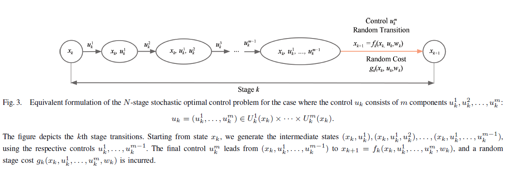
需要记住的是，多智能体rollout策略本质上是将标准（一次性所有智能体）rollout策略应用于图3的（等效）重新构造问题。因此，已知的洞察、结果、误差界限和逼近技术在适当重新构造的形式下适用于标准rollout策略。此外，重新构造的问题可能形成一个以逐个智能体策略改进为基础的近似PI算法。
多智能体强化学习大模型
多智能体问题与单智能体强化学习问题的主要区别在于智能体数量由单个增加至n个，单个智能体的动作空间变为笛卡尔积下的指数型联合动作空间，动作作用于环境，由环境反馈的状态变为包含n个智能体信息的状态集合，为指数次方的状态空间。
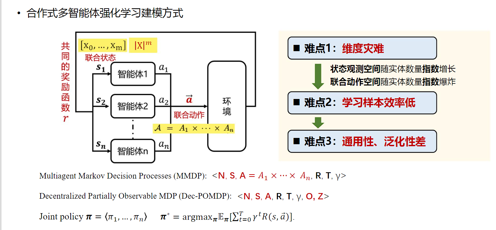多智能体强化学习大模型的根本目的在于设计一个模型，使其具有比较好的泛化性，一个模型可以解决多个类似问题，包括相同游戏不同场景与不同游戏不同场景。
多智能体强化学习大模型目前主要面临四类挑战：
- 不同场景的智能体数量、种类不同；
- 实体的特征、观测、状态不同，导致模型网络输入维度、含义等不同；
- 动作空间不同，导致策略网络输出维度、含义不同；
- 奖励函数不同，导致价值函数网络输出尺度不同。
针对以上挑战，需要对多智能体系统构建一套完备描述的方法，使得在该描述基础上设计通用的决策模型成为可能。
类比语言模型，可对多智能体系统内部进行统一描述。大语言模型的底座由词表构成，词表构成句子，并形成对客观世界的底层描述。使用tokenizer将词转化为可学习的词向量，并对齐含义与维度，将词向量传递至神经网络中并针对具体任务进行训练。对应的，多智能体系统中通过全局的属性表与动作表（动作语义）形成对系统中实体的完备描述（实体表），通过tokenizer的方式将属性转化为属性向量与实体向量，将实体向量传递至后续策略网络等神经网络模型中，输出控制策略。
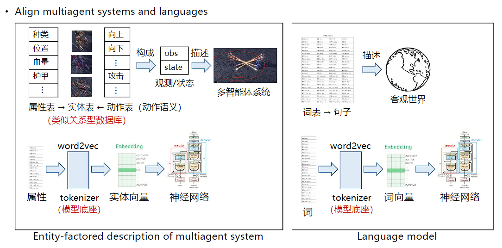动作语义网络
https://arxiv.org/pdf/1907.11461
动作语义网络研究工作的核心思想是根据前面定义的语言描述，将系统整体的动作空间按照不同的动作语义进行划分。如星际争霸中，动作可以划分为与自身状态相关的移动动作与涉及两个智能体交互的攻击动作。在完成动作语义划分后，根据不同的动作类型进行不同的后续处理，移动动作仅与智能体自身状态相关，攻击动作使用pairwise的方式表征两个智能体之间的交互关系。
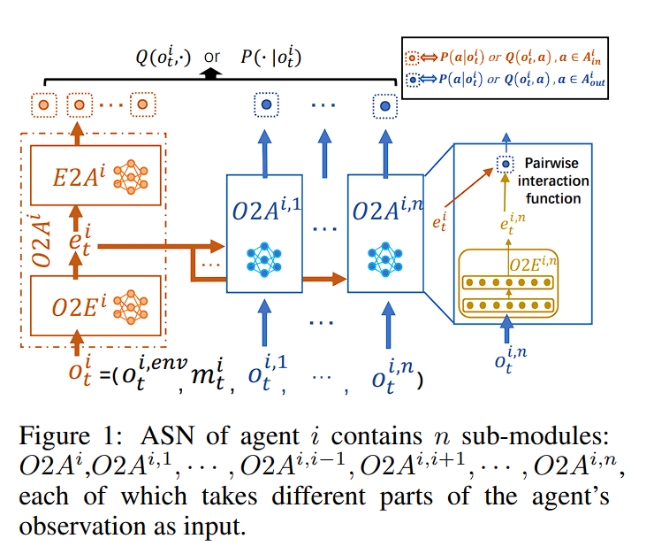对于基于值的强化学习方法，在每个步骤 ，执行每个动作 的评估为 ，其中 是与 对应的 网络的输出之一。为了评估在另一个angent j 上执行动作 的性能，ASN 使用成对交互函数 （例如内积）组合这两个嵌入 和 ：
然后angent 就可以选择 。同样，如果通过基于策略的 RL 方法直接优化策略，则选择每个行动的概率与每个子模块的输出成正比，然后，angent 按照 选择action：
其中， 是对分布进行归一化的函数
置换不变性与置换同变性
https://openreview.net/pdf?id=OxNQXyZK-K8
利用多智能体之间的置换不变性与置换同变性对系统内部天然存在的信息冗余进行压缩，以缩小系统的学习空间，并间接处理网络输入维度不同的问题。
在含有m个实体（包含n个智能体和m-n个非玩家物体）的系统中，状态、观测空间随实体数量指数增长。系统的状态刻画的是实体集合的客观信息，不随输入顺序的变化而变化。在包含同质智能体的系统中，实体信息在排列上存在冗余，因此可利用同质智能体间天然存在的对称性，在模型搭建过程中忽略输入顺序的影响可极大程度约减原有呈指数增长的状态空间。
系统内部具有两种不同类型的动作，包括仅与自身状态相关的动作和存在实体之间交互的动作。在考虑排除输入顺序影响的时候，由于实体间交互动作与对应实体的状态存在一一对应的关系，输入顺序的变化将导致输出含义的对应改变，这对应了函数的置换同变性。另一种仅与自身状态相关的动作类型，改变输入顺序后输出仍然应保持不变，对应了函数的置换不变性。
传统不具备置换不变性的MLP网络输入可以视作每个实体信息乘上独立、对应的子模块参数并对输出进行加和。我们首先提出Dynamic Permutation Network (DPN)，通过增加一个分类选择函数，实现为每个输入实体信息一一绑定确定的子模块参数，进而实现输入层的置换不变性。输出层要求与输入具有一一对应关系，构造类似的分类网络，为每一个实体的输出特征选择确定性的矩阵，使输出的顺序随输入顺序的变化发生协同的变化，从而实现置换同变性。
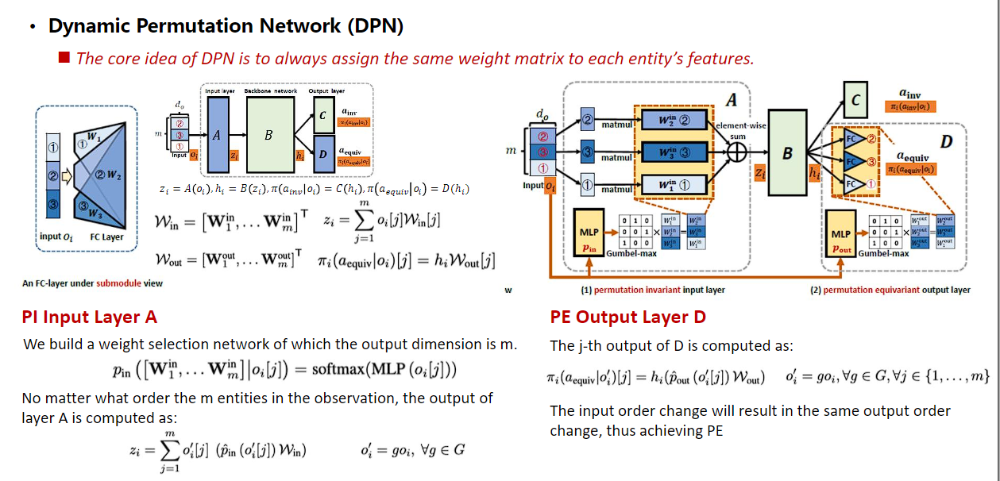
基于相同的思想，我们进一步提出Hyper Policy Network (HPN)，利用“超网络”（用一个网络为另一个网络生成权重参数）自动化地为每个实体生成相应的参数矩阵。以每个实体的特征作为超网络的输入，超网络输出每个实体对应的参数，此结构下实体特征与参数矩阵天然具有一一对应关系，求和后的输出具备置换不变性。输出层利用超网络结构为每一个输入实体特征一一绑定地生成对应参数，使输出与输入实体存在一一对应关系，具备置换同变性。
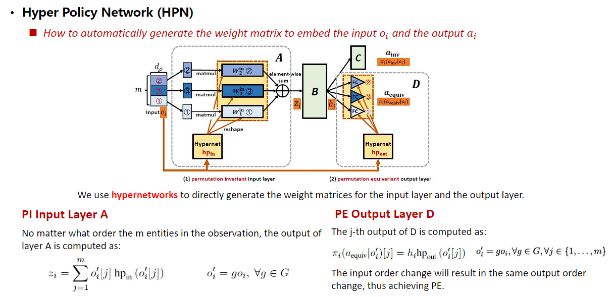
由于设计遵循最小改动原理，该网络结构可非常容易地集成至不同算法（如QPLEX、MAPPO）中，并使算法性能得到较大提升。
跨任务自动化课程学习
https://ojs.aaai.org/index.php/AAAI/article/view/29524
在跨任务的课程学习过程中，系统中存在多个待学习的任务，包括难度较大的目标任务、较简单的起始任务与其他候选的任务集合，课程学习算法每一步需要从候选任务集合中选出最合适的任务从而最终输出一条“最优学习序列（路径）”。解决该问题需要回答两个核心问题：
选哪个课程作为下一个学习目标合适？
前面学到的知识在新的课程中如何复用？
我们提出基于难度和任务相似度选择课程。把当前策略在备选任务集合的所有任务上进行评估，得到相应的奖励值。根据奖励值排序，选择处在中间40%的任务，下一课程在这些任务中产生。同时基于任务相似度，在难度适中的候选任务中选择与目标任务最接近的任务作为最终选定的课程。为了评估与目标任务的相似度，基于当前策略在目标任务和候选任务中进行rollout获得状态访问分布，利用混合高斯模型对该分布进行建模，利用分布相似性衡量任务相似性。
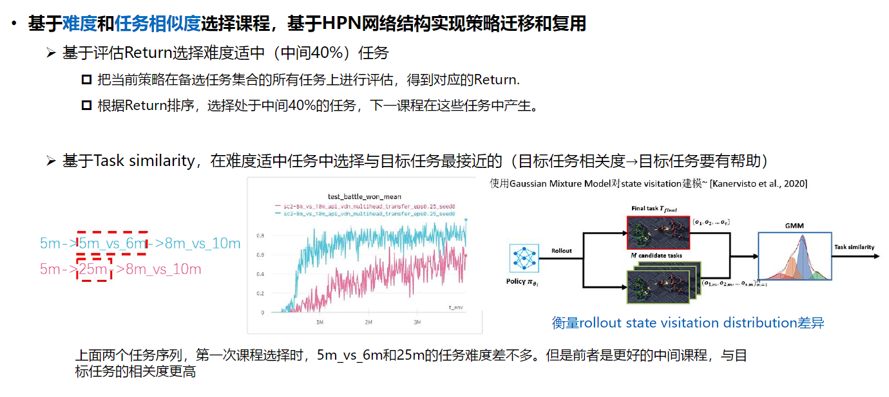
自动化课程学习的整体框架如下，利用难度和相似度选定下一个学习任务，该任务学习过程中利用HPN的结构重载上一个任务学得的策略，依次循环，最终在目标任务上取得更好的性能。
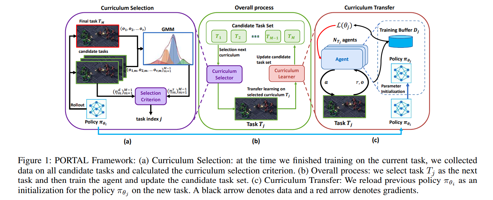
基于HPN网络结构实现策略迁移和复用。采用前述具有置换不变性和置换同变性，同时支持变长输入和输出的HPN网络结构实现策略的迁移和复用。
Multi-Agent Reinforcement Learning is A Sequence Modeling Problem
本文介绍了一种名为多智能体Transformer（MAT）的新型架构，该架构将协同多智能体强化学习（MARL）有效地转化为SM问题，其中目标是将智能体的观察序列映射到智能体的最优动作序列。
为了实现这一目标，我们提出了一种新的MARL训练范式，建立了cooperative MARL问题与序列建模问题之间的联系。新范式的核心是多智能体优势分解定理和顺序更新方案，有效地将多智能体联合策略优化转化为顺序策略搜索过程。我们引入了Multi-Agent Transformer (MAT)，这是一种通过SM实现通用MARL解决方案的编码器-解码器架构，利用多智能体优势分解定理将联合策略搜索问题转化为顺序决策过程，这使得多智能体问题的时间复杂度仅为线性，并且最重要的是，为MAT赋予单调性能保证。与Decision Transformer 不同，MAT在基于试验和错误的在线训练中进行训练，因此不需要事先收集示范数据。重要的是，multi-agent advantage decomposition theorem的实现确保MAT在训练过程中享受到了单调的性能提升保证。MAT为合作MARL任务建立了一个新的最先进基准模型。
MARL基本概念
前面提到将一个多智能体环境用一个元组表示，考虑损失因子也可以表示为
智能体使用 和 来评估动作和观测的价值
形式看上去跟前面概念还是有点不一样，实际上没问题，
- 状态价值函数：，意义为基于 t 时刻的状态 s 能获得的未来回报（reward ）的期望
- 动作价值函数：，意义为基于 t 时刻的状态 s，选择一个 action 后能获得的未来回报（return）的期望
基于，我们可以进一步衡量所选择的智能体子集对联合回报的贡献，并通过如下方式定义多智能体优势函数：
TODO